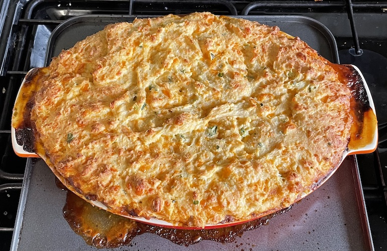

Chilli cornbread pie
Filling
- Heat in pan until browned all over
- olive oil
- 500g beef mince
- Add and cook for 10 mins
- 1 large onion
- 1 green pepper
- 1 red pepper
- 2 cloves garlic
- Add and cook for 2 mins
- 2 tsp oregano
- 2 tsp cumin
- 1 tsp chilli powder
- 1 tsp celery salt
- Add and simmer for 20 mins
- 1 tin tomatoes
- 150ml veg stock (½ cube)
- 1 tbsp tomato puree
- 2 tsp brown sugar
- Add and simmer for 5 mins
- 1½ tbsp jalapenos chopped
- fresh coriander chopped (some stalks)
- Pour into oven dish
- Preheat oven to 170°C
Topping
- Mix in bowl
- 190g plain flour
- 100g polenta
- 2 tsp baking powder
- Mix in
- 240g whole milk
- 100g natural yogurt
- 2 eggs
- Mix in
- Mix in
- fresh coriander chopped (no stalks)
- 1½ tbsp jalapenos chopped
- Mix in
- 100g Red Leicester grated
- 50g mature Cheddar grated
Pie
- Spoon topping over filling
- Bake at 170°C for 30-35 mins until risen and golden (check middle with cocktail stick)
- Leave for 5-10 mins before serving
Serving
- greens / peas / sweetcorn
Notes
- made: 4 Apr 2022
- reduced amount of topping: 175g cheese, 50g butter, 200g flour, 250ml whole milk
- coriander gives topping flecks of green colour
- Original recipe
